1. Подключите диагностический прибор к диагностическому разъему OBD автомобиля;
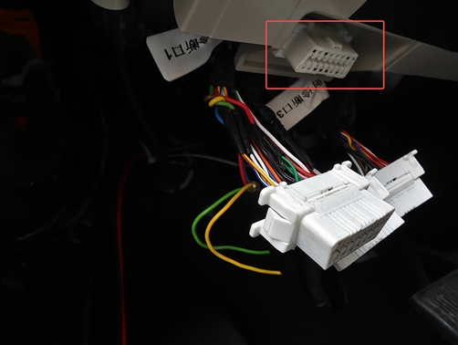
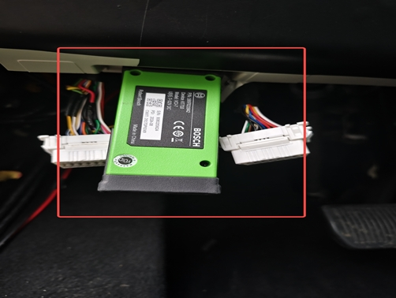
2. Убедитесь, что диагностический прибор подключен к автомобильной мультимедийной системе;
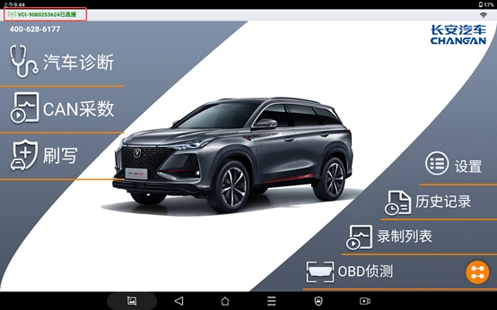
3. Нажмите «Диагностика автомобиля»;
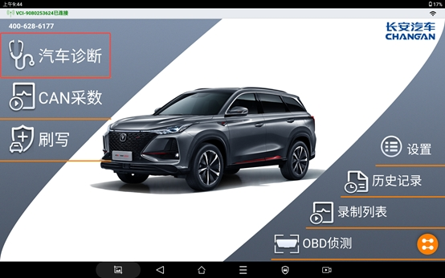
4. Выберите модель автомобиля Changan Qiyuan;
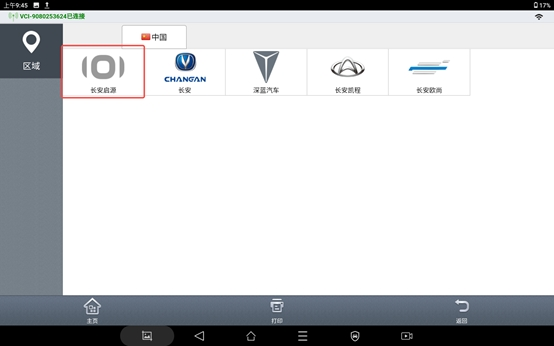
5. Нажмите кнопку отмены в интерфейсе ввода VIN-кода;
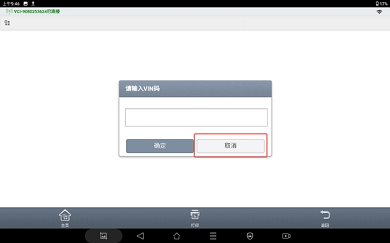
6. Нажмите «Серия Changan Qiyuan»
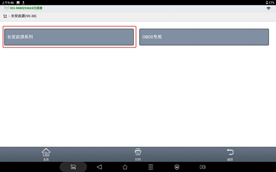
7. Выберите B216
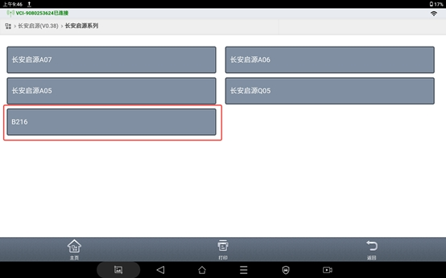
8. Выберите центральный компьютер C3B
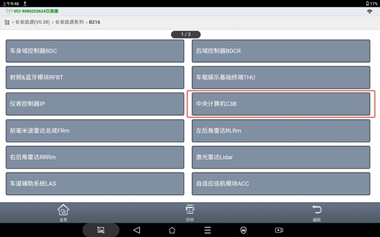
9. Версия диагностических данных
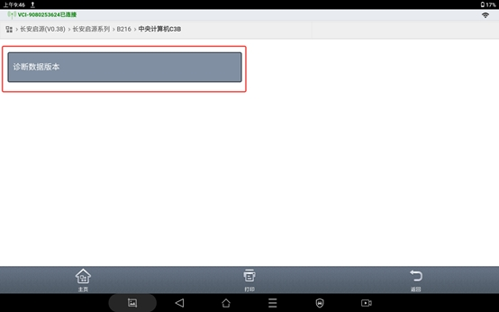
10. Выберите специальные функции
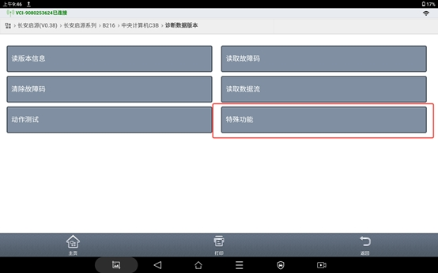
11. Выберите «Да»
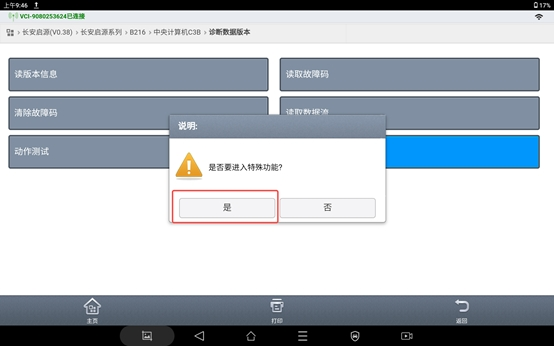
12. Выберите послепродажную калибровку передней и периферийной камер
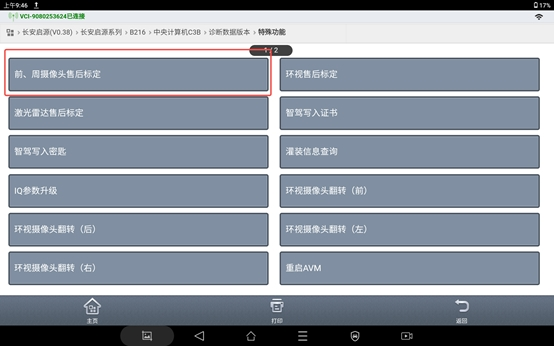
13. Нажмите «Подтвердить»
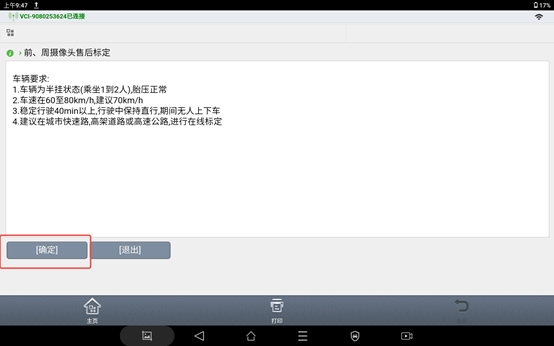
14. Дождитесь завершения калибровки
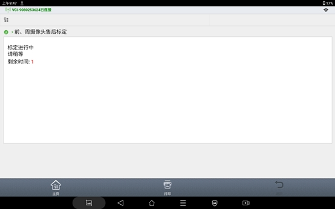